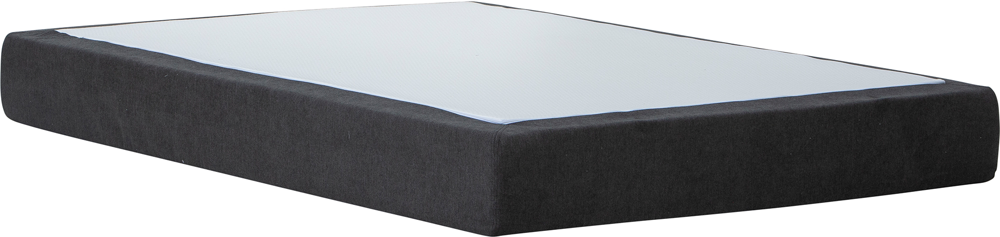
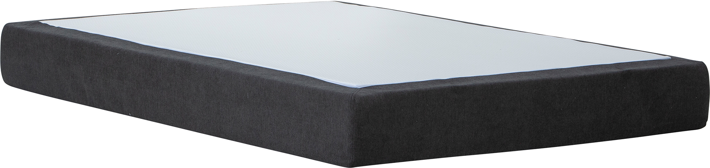

Moon Gold spring mattress 140x200, visco, Primo 96 Anthracite
197708
 

Description
Discover restful nights with the Moon Gold spring mattress in 140x200 cm size, offered in the premium-tier range of our NEST & LIVING collection. Designed to balance timeless style and exceptional comfort, this mattress in a sophisticated anthracite tone features high-quality Primo 96 fabric upholstery for a refined look. Choose between two tailored comfort options: a 7-zone pocket spring system ensuring targeted body support, or adaptive visco memory foam contouring to your shape for personalized relief.
Available in the distinguished Gold tier, the mattress reflects NEST & LIVING's commitment to offering versatile sleep solutions that blend quality with value.
Maintenance is straightforward — keep the upholstery clean by regular vacuuming and gentle wiping, ensuring durability with minimal effort.
Upgrade your bedroom with the Moon Gold mattress, where durable construction meets expert design for a restorative sleep environment.
Technical specifications
| Size | 140 × 200 cm |
|---|---|
| Tier | Gold |
| Colors | Anthracite (Primo 96 fabric) |
| Comfort options | 7-zone pocket spring system or visco memory foam |
| Fabric | Primo 96 Anthracite |
| Care instructions | Regularly vacuum clean and wipe with a damp cloth to maintain appearance and hygiene |